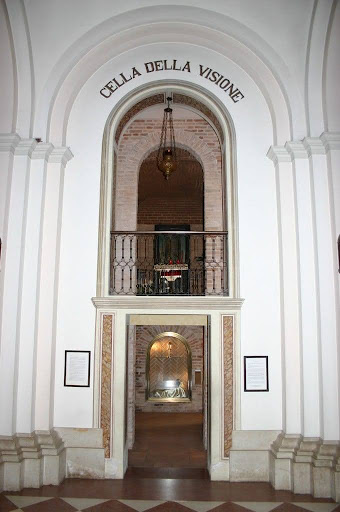

Il Santuario di San Giovanni Battista, o della Visione occupa il sito dell’antica chiesa medievale, eretta prima del castello, purtroppo perduta. L’edificio attuale venne eretto dai frati francescani tra il 1895 ed il 1909. L’imponente chiesa è divisa in tre navate. All’interno, oltre all’altare maggiore sono presenti sei altari, che conservano reliquie del beato Luca Belludi e di altri santi padovani. Alle pareti dell’abside si possono vedere due opere appartenute al vecchio convento: un affresco raffigurante sant’Antonio mentre predica ed una tela seicentesca con la Crocifissione. Il santuario racchiude la Cella della Visione, che ospitò il Santo durante il suo soggiorno a Camposampiero. Si tramanda sia il luogo in cui frate Antonio ebbe la miracolosa visione del Bambin Gesù. Sulla navata destra, in prossimità del transetto, si apre il passaggio che, attraverso una stretta scala, conduce alla minuscola cella. Nonostante i vari rifacimenti subiti dal complesso, essa è stata sempre oggetto di grande venerazione sino ai giorni nostri. Sulla parete di fondo della cella è posta una tavola di legno, forse giaciglio del Santo e per questo trattata come una reliquia. Su di essa, nella seconda metà del Quattrocento, Andrea Vivarini da Murano dipinse un’immagine di buona fattura che ritrae Sant’Antonio con i simboli del giglio, simbolo di purezza e del libro, che indica la sua cultura.
